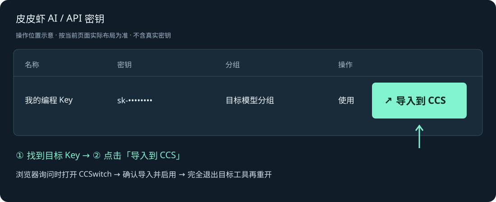
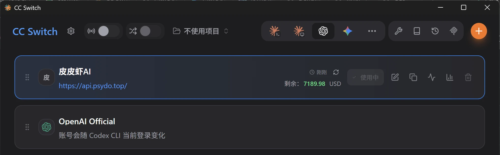

工具接入
CCSwitch
安装 CCSwitch → API 密钥页面一键导入 → 启用 → 完全退出并重开 → 验证。
1. 下载并安装 CCSwitch
前往 CCSwitch 官方下载页面（GitHub Releases），选择适合 Windows、macOS 或 Linux 的安装包。安装后先打开一次，让系统注册 CCSwitch 链接的打开方式。
2. 在 API 密钥页面一键导入
打开皮皮虾 API 密钥页面 ↗，找到准备使用的 Key；没有 Key 时先创建，确认分组、消费来源和模型权限。
在这行的操作栏点击「导入到 CCS」，不是旁边的「使用」按钮。浏览器询问是否打开 CCSwitch 时，允许打开本机应用。

导入会根据 Key 的平台配置选择目标工具：OpenAI 分组对应 Codex，Anthropic 类分组对应 Claude；部分平台会弹出工具选择。不要为了换工具随意更改原 Key 的分组。
3. 在 CCSwitch 确认并启用
核对导入的供应商名称、地址和目标工具，确认导入后启用皮皮虾供应商。模型名称以模型广场 ↗及当前 Key 的可用列表为准；导入默认模型不可用时先核对分组权限。

4. 完全退出目标工具，再重新打开
5. 发送简单任务，核对调用记录
重新启动后发送一条简单请求，打开调用记录 ↗，确认请求、模型和消费来源。仍然 Reconnecting 时按连接问题指南检查；有余额却不能使用时查看余额与套餐说明。
备用：手动配置与项目生图
一键导入不可用，或需要额外配置时再参考下面内容。
展开手动配置截图与生图配置
CCSwitch 用于在本机统一管理 Claude Code、Codex 等客户端的供应商配置。请先升级到支持自定义 Provider 的版本，再添加皮皮虾 AI 供应商。
皮皮虾供应商启用后的实际截图见上方步骤 3。需要手动新增时，使用 CCSwitch 右上角「+」进入配置。
Claude Code
- 在 CCSwitch 顶部选择 Claude，点击右上角“+”，选择自定义配置，供应商名称可填“皮皮虾 AI”。
- Endpoint 填写
https://api.psydo.top，不要添加 /v1。 - 认证令牌填写您自己的皮皮虾 AI API Key；保存后获取模型列表，模型以控制台可见范围为准。
- 启用该供应商后，完全退出再重新打开 Claude Code。
https://api.psydo.topCodex
- 在 CCSwitch 顶部选择 Codex，点击右上角“+”，选择自定义配置。
- Base URL / Endpoint 填写
https://api.psydo.top/v1。 - API Key 填写您自己的皮皮虾 AI API Key，接口协议选择 Responses。
- 模型名称以控制台模型列表和您的当前权限为准；CCSwitch 的默认 Codex 示例模型为
gpt-5.5，不可用时请在控制台确认后替换。
https://api.psydo.top/v1让 Codex 在项目内调用生图
这是推荐方式：CCSwitch 继续使用普通编程分组 Key驱动 Codex；生图分组 Key 只保存在目标项目的本地配置文件里。需要生图时，直接在项目中对 Codex 说“调用皮皮虾生图 Skill 生成一张……”。
- 在控制台“API 密钥”额外创建一把 Key，分组选择生图 API 分组。不要改动 CCSwitch 正在使用的编程 Key。
- 在需要生图的项目根目录创建
.pipixia-image/config.json，写入下方配置；它只存在于本机项目中。 - 把
.pipixia-image/config.json加入该项目的.gitignore，随后让 Codex 创建并使用生图 Skill。 - 以后只需告诉 Codex 图片需求和保存位置；它通过 Skill 读取本地配置并调用图片生成接口。
{
"base_url": "https://api.psydo.top/v1",
"api_key": "在这里粘贴生图 API 分组 Key",
"model": "在控制台模型列表确认的图片模型名称"
}.pipixia-image/config.json把下面整段发给项目里的 Codex：
请在当前项目创建一个本地生图 Skill，供后续按自然语言调用皮皮虾 AI 图片生成。
要求：
1. 创建 .codex/skills/pipixia-image/SKILL.md，说明何时调用、参数、失败处理与输出目录。
2. 只从项目根目录的 .pipixia-image/config.json 读取 base_url、api_key、model；若文件或字段缺失，明确提示用户补充，绝不猜测或写入真实 Key。
3. 使用 POST {base_url}/images/generations，Authorization 为 Bearer {api_key}，请求头必须包含 User-Agent: pipixia-client/1.0，请求 JSON 包含 model、prompt、size。
4. 同时兼容响应里的 data[].url 与 data[].b64_json；将图片保存到 output/images/，文件名使用安全的时间戳与序号。
5. 创建一个可重复调用的本地脚本，不要把 Key 写进代码、日志、命令历史、Git 或输出文件。
6. 在 .gitignore 中确保 .pipixia-image/config.json 被忽略；不要修改或覆盖现有 .gitignore 规则。
7. 调用成功后只汇报生成文件路径、模型和必要的错误信息；不得回显 API Key。
8. 先检查现有项目技术栈，沿用已有语言和脚本约定；完成后给出一次不含真实 Key 的验证说明。生图 Key 说明：生图 Key 与 CCSwitch 的编程 Key 都属于同一账户，可使用账户余额或各自绑定的套餐权益；实际扣费来源还取决于各 Key 选择的余额或套餐及套餐覆盖范围。切换本页顶部端点时，只需同步修改 config.json 的 base_url。
说明：CCSwitch 中切换 API 端点时，只修改 Endpoint/Base URL。遇到 429 时，请先检查余额、模型配额以及套餐/分组权益，不要只当作限流。
内容维护：2026-09-22 · 客户端界面可能随版本变化